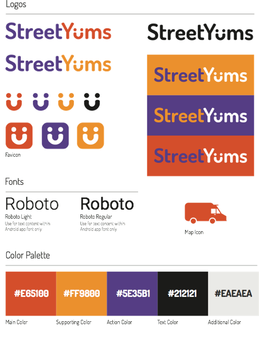
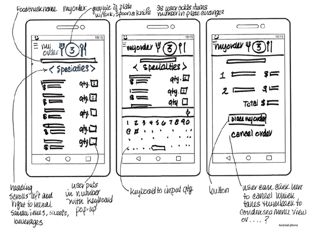

This proposed mobile Android app is a foodtruck locator. People want to find fast, delicious food nearby and this app lets them search, find, order, pay, list favorites, and share comments for great street food.
Brand Development
This app was originally named PayCrave with a little pig as its logo. I felt that that name focused more on the paying aspect of the app rather than the promise of finding delicious street food so I changed the name. And the pig was not a happy symbol for users who are vegetarian. I designed this style guide in Illustrator.

Low Fidelity Prototypes & Userflows
Here are some of the protype and userflow sketches. I developed map or list views, menu categories to keep the selection process simpler, the order and payment process, including a way for users to sign up to make future orders go faster. The ability to post comments, mark favorites, and share with contacts provided its social aspect.
Color Mockups
Purple is used for buttons where a user’s action is needed. Red and orange are proven color choices to stimulate the appetite, increase excitement, and convey energy. I worked in Sketch3 to produce the mockups and export out assets and Photoshop to create additional assets.